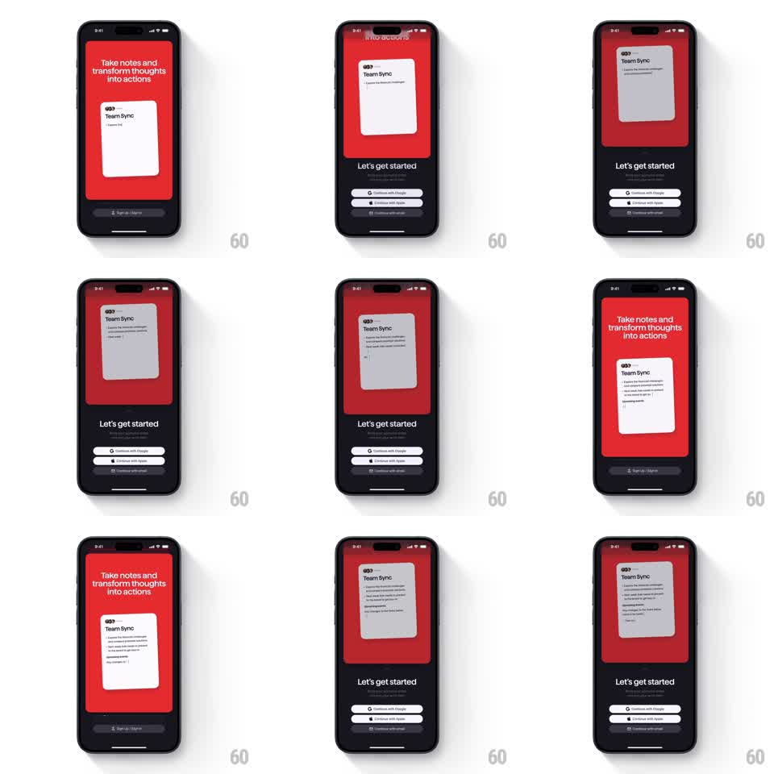

Media
Frame-by-frame

Rebuild this interaction 1:1: Superlist's get-started screen - three auth buttons morph into a single action while the red intro card above rewrites itself and its Team Sync note fills with content.

Rebuild this interaction 1:1: Superlist's get-started screen - three auth buttons morph into a single action while the red intro card above rewrites itself and its Team Sync note fills with content.
## Integration
Integration: stack-agnostic spec - springs given as stiffness/damping, timed motions as duration + curve; map every value to your framework and animation library of choice.
## Scene
Split screen: a red card on top with the headline "Take notes and transform thoughts into actions" and a floating white note card titled "Team Sync"; a black section below with "Let's get started", subtext, and the actions - initially a single dark button, then three white buttons ("Continue with Google", "Continue with Apple", "Continue with email"), which later merge back into one dark action as the note card fills with text lines.
## Motion spec
Pattern: button morph with synchronized card content swap.
- The reveal: the single dark button stretches and splits into the three stacked white auth buttons (height + fade, spring ~320/26, 80ms stagger between them).
- The note card on the red panel grows (height spring ~300/26) as its content lines draw in one by one (fade + rise 6pt, 150ms each, 90ms apart) and the headline crossfades (250ms).
- The merge: the three buttons collapse back toward the bottom one (translate + fade, 300ms, ease-in-out) as it flips white -> dark and its label swaps (200ms crossfade).
- The red panel and black section stay pinned; only the card and buttons transform.
## Calibration
- The morph is geometric: buttons actually travel and merge, not three fades and an appear.
- Card content updates overlap the button morph by ~50% - the whole screen changes as one move.
## Reduced motion
Buttons crossfade between states (250ms); card content fades in as a block.
## Don't miss
- The note card keeps its tilt/shadow while growing - it is a physical card, not a text block.
- Button labels swap without layout jump: same height, same radius throughout.